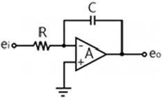
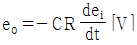
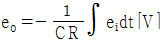
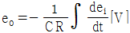
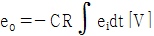
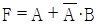
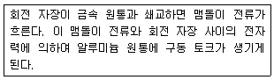
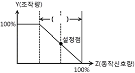
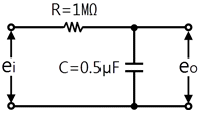

전자기기기능사 (2008-03-30 기출문제)
1과목: 전기전자공학
1. 초크 입력형 평활 회로와 비교한 콘덴서 입력형 평활 회로의 특징으로 가장 적합한 것은?
- 첨두 정류전류가 크다
- 첨두 역전압이 낮다
- 전압 변동률이 작다
- 부하 저항이 작을수록 맥동률이 좋다
(정답률: 38%)

2. 그림과 같은 적분 회로에서 출력 전압 eo는? (단, ei는 입력신호이다.)





(정답률: 55%)
3. 트랜지스터의 증폭 회로에 대한 설명 중 맞지 않는 것은?
- 이미터 접지 회로의 입력은 베이스이다
- 이미터 접지 회로의 출력은 컬렉터이다
- 베이스 접지 회로의 입력은 컬렉터이다
- 컬렉터 접지 회로의 입력은 베이스이다
(정답률: 72%)
4. 다음 중 수정 발진기의 특징에 대한 설명으로 적합하지 않은 것은?
- 수정 진동자의 Q가 매우 높다.
- 압전기 현상을 이용한 발진기이다.
- 발진 주파수는 수정편의 두께에 반비례한다.
- 발진 주파수 변경이 용이하다.
(정답률: 38%)
5. 다음 증폭기 중 효율이 가장 좋은 방식은?
- A급
- B급
- AB급
- C급
(정답률: 82%)
6. 트랜지스터의 hf 측정 시에 필요한 조건은?
- 입력단을 개방
- 입력단을 단락
- 출력단을 개방
- 출력단을 단락
(정답률: 43%)
7. 연산 증폭기에서 차동 출력을 0[V]로 되도록 하기 위하여 입력 단자 사이에 걸어주는 것은?
- 입력오프셋전류
- 출력오프셋전류
- 입력오프셋전압
- 입력 오프셋 전류 드리프트
(정답률: 68%)
8. 이상적인 증폭기에서 대역폭을 2배로 하려면 이득을 약 몇 [dB] 내려야 하는가?
- 0.7
- 2
- 5
- 6
(정답률: 45%)
9. A점의 전위가 100[V]이고, B점의 전위가 20[V]일 때 두 점 사이에 5[Ω]의 저항을 접속하면 흐르는 전류는 몇 [A]인가?
- 10
- 13
- 16
- 20
(정답률: 61%)
10. 임피던스 정합이 필요한 이유는?
- 대역폭을 넓히기 위하여
- 고주파 특성을 개선하기 위하여
- S/N 비를 개선시키기 위하여
- 회로의 전력 손실을 줄이기 위하여
(정답률: 49%)
11. 어떤 전원에 부하를 연결했을 때 직류 전압이 100[V]이고, 부하가 없을 때 직류 전압이 110[V]였다면 전압 변동률은 몇 [%]인가?
- 5
- 10
- 11
- 12
(정답률: 85%)
12. 단상 전파 정류 회로의 이론적 최대 정류 효율은 약 몇 [%]인가?
- 40.6[%]
- 52.8[%]
- 68.4[%]
- 81.2[%]
(정답률: 64%)
13. 어떤 도체가 60분간 3,600[C]의 전기량이 통과하면 이 때 흐르는 전류는 몇 [A]인가?
- 0.5[A]
- 1[A]
- 1.5[A]
- 2[A]
(정답률: 85%)
14. 증폭기의 입력에 1[V]를 가했을 때 10[V]의 출력 전압을 얻었다면 전압 이득은 몇 [dB]인가?
- 10
- 20
- 30
- 40
(정답률: 60%)
15. 다음중 이상적인 연산 증폭기의 특성이 아닌 것은?
- 전압이득이 무한대이다
- 입력저항이 무한대이다
- 출력저항이 무한대이다
- 대역폭이 무한대이다
(정답률: 76%)
2과목: 전자계산기일반
16. 다음 중 CR 발진기에 대한 설명으로 적합하지 않은 것은?
- C와 R을 사용하여 정귀환에 의하여 발진을 시킨다.
- 발진 파형은 구형파이다.
- CR 발진기는 이상형과 브리지형이다.
- 저주파수 발진에 많이 사용된다.
(정답률: 42%)
17. 2n개의 입력 중에 선택 입력 n개를 이용하여 하나의 정보를 출력하는 조합 회로는?
- 디코더
- 인코더
- 멀티플렉서
- 아날로그 변환기
(정답률: 61%)
18. 데이터 전송 속도의 단위는?
- bit
- byte
- baud
- binary
(정답률: 67%)
19. 마이크로프로세서의 구성 요소가 아닌 것은?
- 누산기
- 연산장치
- 입력 장치
- 레지스터
(정답률: 66%)
20. 중앙 처리 장치와 주기억 장치 사이의 속도 차이를 해결하기 위해 장치한 고속 버퍼 기억 장치는?
- 캐시기억장치
- 주기억장치
- 보조기억장치
- 가상기억장치
(정답률: 89%)
21. 논리식

와 같은 기능을 갖는 논리식은?- AㆍB
- A＋B
- A-B
- B
(정답률: 57%)
22. 운영 체제의 구성 요소 중 제어 프로그램에 속하지 않는 것은?
- 감독 프로그램
- 작업 관리 프로그램
- 데이터 관리 프로그램
- 언어 번역 프로그램
(정답률: 73%)
23. 다음 중 레지스터의 역할이 아닌 것은?
- 명령의 저장
- 데이터의 저장
- 주소의 저장
- 디코더 출력 신호의 저장
(정답률: 54%)
24. I/O 장치와 주기억 장치를 연결하는 역할을 담당하는 부분은?
- bus
- buffer
- channel
- device
(정답률: 60%)
25. 자기 보수화 코드가 아닌 것은?
- Excess-3 code
- 2421 code
- 51111 code
- Gray code
(정답률: 72%)
26. 어떤 컴퓨터의 주기억 장치 용량이 4,096word로 구성되어 있고, word당 16bit라면 이 컴퓨터의 MAR는 몇 bit 레지스터인가?
- 8
- 12
- 16
- 4,096
(정답률: 40%)
27. 다음 중 반도체 기억소자 ROM에 대한 설명으로 틀린 것은?
- 정보의 쓰기는 불가능하고 읽기만 가능하다.
- 기억 내용을 수시로 바꾸어야 하는 곳에는 사용이 불가능하다.
- 전원이 나가면 기록된 정보는 소멸된다.
- 비휘발성 메모리이다.
(정답률: 67%)
28. 명령어의 기본적인 구성 요소 2가지를 옳게 짝지은 것은?
- 기억 장치와 연산 장치
- 오퍼레이션 코드와 오퍼랜드
- 입력 장치와 출력 장치
- 제어 장치와 논리 장치
(정답률: 81%)
29. 다음 중 표준 신호 발생기의 구비 조건으로 옳지 않은 것은?
- 변조도가 자유롭게 조절될 수 있을 것
- 출력은 1개 주파수에 고정되어 있을 것
- 누선 전류가 작고, 출력 임피던스가 일정할 것
- 주파수가 정확하고, 불필요한 출력을 내지 않을 것
(정답률: 60%)
30. 가동 코일형 전류계는 측정하고자 하는 전류가 대체로 50[mA] 이하로 작을 때는 가동 코일에 직접 전류를 흐르게 할 수 있으나, 그 이상의 전류를 측정하고자 할 때는 계기에 무엇을 접속하여 측정하는 것이 옳은가?
- 분류기
- 배율기
- 검류기
- 정류기
(정답률: 61%)
3과목: 전자측정
31. 다음 설명으로 가장 알맞은 계기의 명칭은?

- 가동 코일형 계기
- 전류력계형 계기
- 가동 철편형 계기
- 유도형 계기
(정답률: 78%)
32. 안테나의 실효 저항은 희망 주파수에서 공진시킨 상태에서 측정해야 한다. 실효 저항 측정법이 아닌 것은?
- 저항 삽입법
- 작도법
- coil 삽입법
- 치환법
(정답률: 71%)
33. 다음 중 충격 전압의 측정에 적합한 계기는?
- 클리도노그래프
- 가동 코일형 전압계
- 정전형 전압계
- 교류 전위차계
(정답률: 49%)
34. 전압계에 100[V]를 가했을 때 전압계의 지시가 101.5[V]이면 그 오차율[%]은?
- ＋1.48
- ＋1.5
- - 1.48
- - 1.5
(정답률: 78%)
35. 다음 중 미지의 값을 측정할 때 참값에 얼마나 일치하는가를 나타내는 것은?
- 감도
- 신뢰도
- 정도
- 확도
(정답률: 47%)
36. 기전력 100[V], 내부 저항 33[Ω]인 전지에 내부 저항 300[Ω]의 전압계를 접속할 때 전압계의 지시값은 약 몇 [V]인가?
- 90
- 93
- 96
- 100
(정답률: 46%)
37. 다음 중 오실로스코프로 직접 측정할 수 없는 것은?
- 주파수
- 위상
- 파형
- 회전수
(정답률: 80%)
38. 지시 계기의 3대 요소가 아닌 것은?
- 구동 장치
- 계량 장치
- 제동 장치
- 제어 장치
(정답률: 86%)
39. 다음 중 저저항의 측정 방법으로 옳은 것은?
- 직접 편의법
- 전압계법
- 전압 강하법
- 캠벨 브리지법
(정답률: 37%)
40. 볼로미터 전력계의 계기 내부에서 고주파 반사가 일어나지 않도록 설치한 정합용 금속의 이름은?
- 볼로미터 마운트
- 볼로미터 컨트롤
- 볼로미터 커플러
- 볼로미터 콘덴서
(정답률: 41%)
41. 다음 그림은 동작 신호량(Z)과 조작량(Y)의 관계를 나타낸 것이다. 그림의 ( ) 안에 알맞은 것은?

- 적분시간
- 미분시간
- 동작범위
- 비례대
(정답률: 62%)
42. 전자 빔이 시료를 투과할 때 속도가 다른 여러 전자가 생겨서 상이 흐려지는 현상은?
- 색 수차
- 구면 수차
- 라디오존데
- 축 비대칭 수차
(정답률: 80%)
43. 다음 중 비디오 신호를 기록·재생하는 장치로 해상도나 화상의 아름답기를 결정하는 성능상 매우 중요한 부분은?
- 비디오 헤드
- 헤드 드럼
- 비디오테이프
- 로딩기구
(정답률: 79%)
44. 서보 기구라 함은 다음 중 어느 자동 제어 장치를 나타내는 것인가?
- 온도
- 유량이나 압력
- 위치나 각도
- 시간
(정답률: 77%)
45. TV 수상기의 영상 증폭 회로에서 피킹 코일에 관한 설명으로 맞는 것은?
- 수직의 동기를 제거
- 저역 주파수 특성 보상
- 고역 주파수 특성 보상
- 4.5[MHz]의 음성 신호 제거
(정답률: 60%)
4과목: 전자기기 및 음향영상기기
46. 다음 중 레이더에 사용되는 전파는?
- 사인파형의 장파
- 펄스형의 중파
- 사인파형의 단파
- 펄스형의 초단파
(정답률: 59%)
47. 기계적 또는 전기적양을 제어하는 정치제어를 자동조정이라 하는데 이에 속하지 않는 것은?
- 전류의 제어
- 속도의 제어
- 온도의 제어
- 토크의 제어
(정답률: 55%)
48. 다음 고주파 가열 중 유전 가열의 설명으로 옳지 않은 것은?
- 가열이 골고루 된다.
- 온도 상승이 빠르다.
- 피가열물의 모양에 제한을 받지 않는다.
- 내부 가열이므로 표면 손상이 되지 않는다.
(정답률: 68%)
49. 전자 냉동에 대한 설명으로 가장 옳지 않은 것은?
- 온도 조절이 용이하다.
- 대용량에 더욱 효율이 좋다.
- 소음이 없고 배관도 필요 없다.
- 전류 방향만 바꾸어 냉각과 가열을 쉽게 변환할 수 있다.
(정답률: 70%)
50. AN 레인지 비컨에서 등신호 방향과 관계없는 각도는?
- 45°
- 190°
- 135°
- 315°
(정답률: 77%)
51. 다음 중 초음파 성질에 대한 설명으로 옳은 것은?
- 지향성은 진동수가 많을수록 작아진다.
- 기체나 액체 중에서는 종파로 전파된다.
- 감쇠율은 고체, 액체, 기체 순으로 작아진다.
- 특성 임피던스가 다른 물질의 경계면에서 반사 및 굴절을 한다.
(정답률: 52%)
52. 고주파 유도 가열에 해당하는 것은?
- 금속 표면의 가열
- 음식물 조리
- 목재의 접착
- 합성수지의 접착
(정답률: 70%)
53. 녹음기에서 테이프를 헤드에 정확히 밀착시켜 레벨 변동이나 고역 저하의 원인이 되는 스페이싱 손실을 줄이는 것은?
- 핀치 롤러와 텐션암
- 테이프 가이드와 캡스턴
- 캡스턴과 핀치 롤러
- 압착 패드
(정답률: 53%)
54. 항법보조장치 ILS란?
- 계기 착륙 시스템
- 회전 비커
- 무지향성 무선표식
- 호우머
(정답률: 85%)
55. VTR의 컬러 프로세스의 VHS 방식에서 사용하고 있는 색 신호 처리 방식은?
- DOS 방식
- HPF2
- PS 방식
- PI 방식
(정답률: 64%)
56. 수신기의 특성 중 송신된 전파를 수신할 때 수신기가 본래의 정보 신호를 어느 정도 정확하게 재생시키느냐의 능력을 나타내는 것으로, 주파수 특성, 일그러짐, 잡음 등에 의하여 결정되는 것은?
- 충실도
- 안정도
- 선택도
- 감도
(정답률: 73%)
57. 제어계의 방식에 따른 제어용 증폭기에 속하지 않는 것은?
- 전기식
- 유압식
- 기계식
- 공기식
(정답률: 51%)
58. 다음 중 텔레비전의 고압 전원은 어디에서 얻어내는가?
- 부스터 회로에서 얻어낸다.
- B전원을 3배 전압하여 얻어낸다.
- 전원 트랜스를 승압하여 얻어낸다.
- 수평 귀선 기간에 일어나는 펄스를 승압하여 얻어낸다.
(정답률: 53%)
59. 다음 중 서보 기구의 구성에 포함되지 않는 것은?
- 단상 전동기
- 리졸버
- 차동 변압기
- 싱크로
(정답률: 57%)
60. 그림과 같은 적분 회로의 시정수[sec]는 얼마인가?

- 0.2
- 0.5
- 2
- 5
(정답률: 69%)